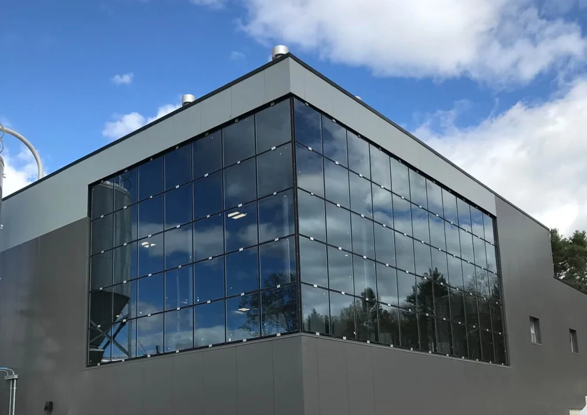
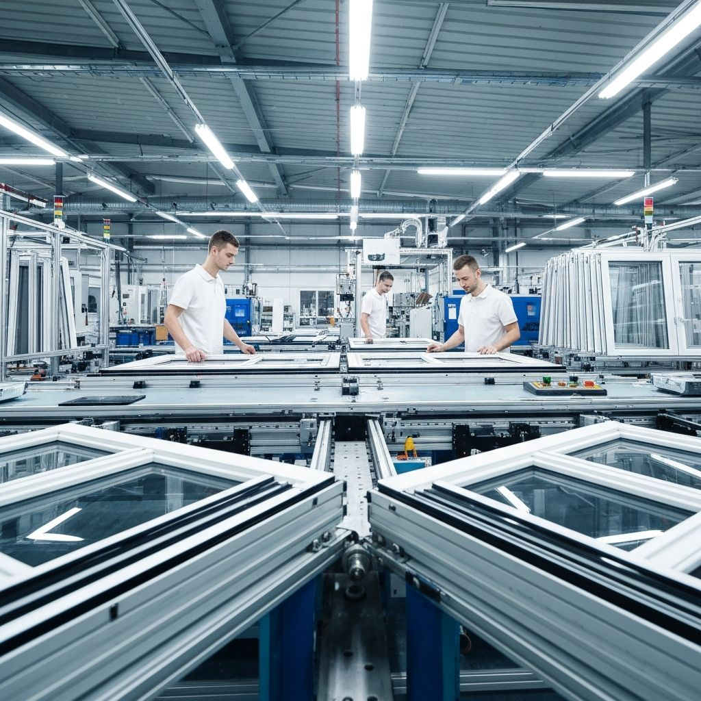

Profili & hermetizimi
Thellësia dhe koncepti AS/AD/MD përshkruajnë sistemin. Numri i dhomave, përforcimi dhe përmasat kontrollohen për variantin konkret.
Dyer, dritare dhe fasada të menduara për më shumë dritë, qetësi dhe komfort në çdo ambient.
Zgjidhje për shtëpi dhe ambiente afariste.
Dy sistemet kryesore bashkë. Profilet e tjera shfaqen me radhë në një faqe të vetme.

Fasadat strukturale kombinojnë panelet e xhamit me një nënstrukturë alumini, për një pamje të vazhdueshme të objektit. Lloji i xhamit, sistemi i fiksimit dhe detajet e montimit përcaktohen sipas projektit.
Kërko ofertë për fasadë ↗
Nga përzgjedhja e profilit deri te montimi, kujdesemi që çdo detaj t’i përshtatet hapësirës suaj. Dyer, dritare dhe fasada PVC e alumini, me komunikim të drejtpërdrejtë dhe vëmendje në çdo hap.
Pamje dhe detaje nga sistemet e xhamit, PVC-së dhe aluminit.
Na dërgoni përmasat orientuese dhe produktin që ju intereson. E vazhdojmë bisedën së bashku.
+389 71 442 821 ↗Zgjedhja varet nga hapësira, izolimi që kërkoni dhe dizajni. Na kontaktoni për të diskutuar profilet PVC, alumini dhe sistemet panoramike sipas projektit tuaj.
Matjet orientuese na ndihmojnë të përgatisim një vlerësim fillestar. Përmasat dhe detajet përfundimtare konfirmohen para prodhimit.
Afati varet nga sistemi, sasia dhe kompleksiteti i projektit. E përcaktojmë së bashku gjatë konfirmimit të ofertës.
AS/AD përdorin vulosje në ndalesë; MD shton një guarnicion qendror në konceptin e sistemit. Dallimi nuk duhet ngatërruar me numrin e dhomave ose me trashësinë e xhamit.
Thellësia është vetëm një pjesë e zgjedhjes. Duhet parë xhami, përmasat, orientimi, mekanizmi dhe kërkesat e projektit. Vlerësimi bëhet për dritaren e plotë.
Jo. Uf i përket kornizës, Ug xhamit dhe Uw dritares së plotë. Ndryshimi i xhamit, përmasave ose distancierit mund ta ndryshojë Uw.
Pastroni profilet dhe guarnicionet me mjete të buta dhe detergjent të përshtatshëm. Mbani të lira vrimat e kullimit dhe ndiqni udhëzimin e prodhuesit për mekanizmat.
Kondensimi lidhet me lagështinë, temperaturën e sipërfaqes dhe ajrosjen. Vendndodhja e tij në xham ka rëndësi; shkaku vlerësohet sipas rastit dhe nuk përcaktohet vetëm nga profili.